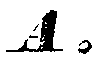
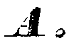

Conversion
Last modified: May 17, 2022
extract_imaginary
Image [Float] extract_imaginary ()
| Operates on: | Image [Complex] |
|---|---|
| Returns: | Image [Float] |
| Category: | Conversion |
| Defined in: | image_conversion.py |
| Author: | Michael Droettboom and Karl MacMillan |
Returns a Float image containing only the imaginary values in the given complex image.
extract_real
Image [Float] extract_real ()
| Operates on: | Image [Complex] |
|---|---|
| Returns: | Image [Float] |
| Category: | Conversion |
| Defined in: | image_conversion.py |
| Author: | Michael Droettboom and Karl MacMillan |
Returns a Float image containing only the real values in the given complex image.
to_complex
Image [Complex] to_complex ()
| Operates on: | Image [OneBit|GreyScale|Grey16|RGB|Float] |
|---|---|
| Returns: | Image [Complex] |
| Category: | Conversion |
| Defined in: | image_conversion.py |
| Author: | Michael Droettboom and Karl MacMillan |
Converts the given image to a COMPLEX image.
Note, converting an image to one of the same type performs a copy operation.
to_float
Image [Float] to_float ()
| Operates on: | Image [OneBit|GreyScale|Grey16|RGB|Complex] |
|---|---|
| Returns: | Image [Float] |
| Category: | Conversion |
| Defined in: | image_conversion.py |
| Author: | Michael Droettboom and Karl MacMillan |
Converts the given image to a FLOAT image according to the following rules:
- for ONEBIT images, 0 is mapped to 0.0 and everything else to 1.0
- for GREYSCALE and GREY16 images, pixel values are copied unchanged
- for RGB images, the luminance is used, which is defined in VIGRA as 0.3*R + 0.59*G + 0.11*B
Converting an image to one of the same type performs a copy operation.
to_grey16
Image [Grey16] to_grey16 ()
| Operates on: | Image [OneBit|GreyScale|Float|RGB|Complex] |
|---|---|
| Returns: | Image [Grey16] |
| Category: | Conversion |
| Defined in: | image_conversion.py |
| Author: | Michael Droettboom, Karl MacMillan, and Christoph Dalitz |
Converts the given image to a GREY16 image according to the following rules:
- for ONEBIT images, 0 is mapped to 65535 and everything else to 0.
- for FLOAT images, the range [min,max] is linearly scaled to [0,65535]
- for GREYSCALE images, pixel values are copied unchanged
- for RGB images, the luminance is used, which is defined in VIGRA as 0.3*R + 0.59*G + 0.11*B. This results only in a value range [0,255]
Converting an image to one of the same type performs a copy operation.
to_greyscale
Image [GreyScale] to_greyscale ()
| Operates on: | Image [OneBit|Float|Grey16|RGB|Complex] |
|---|---|
| Returns: | Image [GreyScale] |
| Category: | Conversion |
| Defined in: | image_conversion.py |
| Author: | Michael Droettboom, Karl MacMillan, and Christoph Dalitz |
Converts the given image to a GREYSCALE image according to the following rules:
- for ONEBIT images, 0 is mapped to 255 and everything else to 0.
- for FLOAT images, the range [min,max] is linearly scaled to [0,255]
- for GREY16 images, the range [0,max] is linearly scaled to [0,255]
- for RGB images, the luminance is used, which is defined in VIGRA as 0.3*R + 0.59*G + 0.11*B
Converting an image to one of the same type performs a copy operation.
Example 1: to_greyscale()

to_onebit
Image [OneBit] to_onebit ()
| Operates on: | Image [Float|GreyScale|Grey16|RGB|Complex] |
|---|---|
| Returns: | Image [OneBit] |
| Category: | Conversion |
| Defined in: | image_conversion.py |
| Author: | Michael Droettboom and Karl MacMillan |
Converts the given image to a ONEBIT image. First the image is converted and then the otsu_threshold algorithm is applied. For other ways to convert to ONEBIT images, see the Binarization category.
Converting an image to one of the same type performs a copy operation.
Example 1: to_onebit()
Example 2: to_onebit()
 

to_rgb
Image [RGB] to_rgb ()
| Operates on: | Image [OneBit|GreyScale|Float|Grey16|Complex] |
|---|---|
| Returns: | Image [RGB] |
| Category: | Conversion |
| Defined in: | image_conversion.py |
| Author: | Michael Droettboom, Karl MacMillan, and Christoph Dalitz |
Converts the given image to an RGB image according to the following rules:
- for ONEBIT images, 0 is mapped to (255,255,255) and everything else to (0,0,0)
- for GREYSCALE and GREY16 images, R=G=B
- for FLOAT images, the range [min,max] is linearly mapped to the 256 grey values
Note, converting an image to one of the same type performs a copy operation.